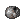

Refinement System/Portuguese
Você pode refinar equipamentos no Ragnarok Online para tornar eles mais poderosos. Cada refinamento bem-sucedido em uma arma ou armadura adicionará um '+1' em seu nome, até o +20. Equipamento para cabeça no meio e baixo e acessórios não podem ser refinados.
Em relação ao refinamento de Shadow Gears, leia Shadow Gear Refinement.
O processo de refinamento tem uma chance de 100% até atingir o seu limite de segurança, conhecido em inglês como 'safe' ou 'safe limit', e esse limite muda de acordo com o nível de sua arma - todas as armaduras tem o mesmo limite. No caso de o refinamento falhar, se seu equipamento estiver +9 ou menos, ele irá quebrar, e se tiver +10 ou mais, ele pode quebrar, mas tem uma chance maior de só perder 3 níveis de refinamento ao invés de quebrar. O tipo de minério utilizado no processo de refinamento pode mudar essas regras.
Materiais necessários
Os materiais necessários vão mudar dependendo do nível de refinamento da arma e da armadura, além também do seu nível se for uma arma.
Equipamento abaixo de +10
- Arma Lv1 - Phracon
- Arma Lv2 -
 Emveretarcon
Emveretarcon - Arma Lv3 and Lv4 -
 Oridecon / Enriched Oridecon
Oridecon / Enriched Oridecon - Armadura -
 Elunium/ Enriched Elunium
Elunium/ Enriched Elunium
Equipamento acima de +10
- Armas - Bradium /
 HD Bradium
HD Bradium - Armadura - Carnium /
 HD Carnium
HD Carnium
Opcional
Os diferentes minérios e seus efeitos
Como já mencionado, os minérios de diferentes tipos podem seguir diferentes regras. Os minérios disponíveis no servidor estão listado abaixo.
HD Bradium/ HD Carnium - HD quer dizer Alta Densidade. Ao invés de perder 3 níveis de refino ao falhar, você perderá apenas 1, além também de o equipamento não ter chance alguma de quebrar.
Enriched Elunium/ Enriched Oridecon - Oferece uma chance maior de sucesso ao refinar.
 Blacksmith's Blessing - O equipamento não irá quebrar no caso de falha no processo de refinamento.
Blacksmith's Blessing - O equipamento não irá quebrar no caso de falha no processo de refinamento.
Adquirindo os minérios
- Phracon -Vendido por 200z em NPCs, dropa de monstros
- Emveretarcon - Vendido por 1,000z em NPCs, dropa de monstros
 Rough Oridecon - Dropa de monstros
Rough Oridecon - Dropa de monstros-  Rough Elunium - Dropa de monstros
- Oridecon - Dropa de monstros, ou na conversão de 5 Rough Oridecon em 1 Oridecon
- Elunium - Dropa de monstros, ou na conversão de 5 Rough Elunium em 1 Elunium
- Enriched Oridecon - Disponível na Nova Shop
- Enriched Elunium - Disponível na Nova Shop
- Carnium - 3 Elunium + 50,000 Zeny, também dropa de monstros
- Bradium - 3 Oridecon + 50,000 Zeny, também dropa de monstros
- HD Carnium - Disponível na Nova Shop
- HD Bradium - Disponível na Nova Shop
- Blacksmith's Blessing - Weekly Quests - as quests semanais.
Métodos de refinamento
Há varias maneiras de se refinar:
- Refinamento através de NPC - os NPCs compram uma taxa em zeny a cada tentativa. Eles são marcados com uma bigorna em seu minimapa.
- Janela de Refinamento - Possibilita o uso do item Blacksmith's Blessing para refinar. Para abrir essa janela, fale com o mesmo NPC acima.
- Skill
 Weapon Refine - Um Whitesmith pode utilizar essa skill para refinar equipamentos. Ela adiciona um extra de +0.5% para a chance de refinar a cada nível de classe a partir do 50. O bônus total, no nível de classe 70, é de 10%.
Weapon Refine - Um Whitesmith pode utilizar essa skill para refinar equipamentos. Ela adiciona um extra de +0.5% para a chance de refinar a cada nível de classe a partir do 50. O bônus total, no nível de classe 70, é de 10%.
- Só pode ser usada para armas +9 ou menos. Atenção ao nível de classe: se for abaixo de 50, o equipamento pode quebrar até mesmo dentro do limite de segurança.
- No NovaRO, a classe Mechanic, em qualquer nível de classe, tem o bônus completo de 10% no refinamento, independente de quanto era seu nível de classe como Whitesmith e stats que usa.
- Stats da personagem não afectam a skill de refinar - Weapon Refine. 100 ou 0 de LUK é a mesma coisa, muda zero.
Efeitos do refinamento
Uma arma melhorada ganhará os seguintes bônus para ATK e MATK:
- Weapons
- Arma Lv. 1 - A cada +1 confere 2 ATK, 0~3 ATK para cada Over Upgrade a partir do limite de segurança de +7, e 3 ATK para cada High Upgrade acima de +15.
- Arma Lv. 2 - A cada +1 confere 3 ATK, 0~5 ATK para cada Over Upgrade a partir do limite de segurança de +6, e 6 ATK para cada High Upgrade acima de +15.
- Arma Lv. 3 - A cada +1 confere 5 ATK, 0~8 ATK para cada Over Upgrade a partir do limite de segurança de +5, e 9 ATK para cada High Upgrade acima de +15.
- Arma Lv. 4 - A cada +1 confere 7 ATK, 0~14 ATK para cada Over Upgrade a partir do limite de segurança de +4, e 12 ATK para cada High Upgrade acima de +15.
- Uma arma level 4 com nível de refino +20 ganha 201~424 ATK e MATK a mais.
Observações:
- 'O bônus de 'Over Upgrade é aleatório para cada hit, e tem um mínimo de 1. Esse bônus não é mostrado na janela de atributos (Alt+A), ou afetado pelas skills Maximize Power e Recognized Spell.
- Todos os bônus de melhoramentos são cumulativos, então refinar uma arma de nível 4 de +15 para +16 aumenta seu bônus em ATK e MATK de 106~259 para 125~292 (7 do upgrade, 0~14 do Over Upgrade e 12 do High Upgrade).
- Armaduras
- Cada nível de refinamento confere uma base de [( 3 + current upgrade ) / 4] Equipment DEF
- A cada +1 acima de +1 ~ +4 confere +1 Equipment DEF
- A cada +1 acima de +5 ~ +8 confere +2 Equipment DEF
- A cada +1 acima de +9 ~ +12 confere +3 Equipment DEF
- A cada +1 acima de +13 ~ +16 confere +4 Equipment DEF
- A cada +1 acima de +17 ~ +20 confere +5 Equipment DEF
- Exemplo : um Buckler +10 terá 40 + 1+1+1+1 + 2+2+2+2 +3+3 = 58 DEF.
Refinar seus equipamentos é sempre uma ótima forma de melhorar seu personagem, já que aumenta seu dano e sua defesa.
Probabilidades de refino
A sua chance de refino depende do método que você está utilizando, o nível da arma (uma armadura corresponde a uma arma lv.4 até o +9) além também do minério utilizado.
Essas tabelas começam a partir do +4, pois este é o limite de segurança de todos os equipamentos.% chance.
Oridecon e Elunium comum
| Nível de Refino | Arma Lv. 1 | Arma Lv. 2 | Arma Lv. 3 | Arma Lv. 4 | Armadura |
| +4 -> +5 | 100% | 100% | 100% | 60% | 60% |
| +5 -> +6 | 100% | 100% | 60% | 40% | 40% |
| +6 -> +7 | 100% | 60% | 50% | 40% | 40% |
| +7 -> +8 | 60% | 40% | 20% | 20% | 20% |
| +8 -> +9 | 40% | 20% | 20% | 20% | 20% |
| +9 -> +10 | 19% | 19% | 19% | 9% | 9% |
| Nível de Refino | Arma Lv. 1 | Arma Lv. 2 | Arma Lv. 3 | Arma Lv. 4 | Armadura |
| +0 -> +5 | 100% | 100% | 100% | 60% | 60% |
| +0 -> +6 | 100% | 100% | 60% | 24% | 24% |
| +0 -> +7 | 100% | 60% | 30% | 9.6% | 9.6% |
| +0 -> +8 | 60% | 24% | 6% | 1.92% | 1.92% |
| +0 -> +9 | 24% | 4.8% | 1.2% | 0.384% | 0.384% |
| +0 -> +10 | 4.56% | 0.91% | 0.23% | 0.035% | 0.035% |
Mechanic ou Whitesmith com Job 70
| Nível de Refino | Arma Lv. 1 | Arma Lv. 2 | Arma Lv. 3 | Arma Lv. 4 |
| +4 -> +5 | 100% | 100% | 100% | 70% |
| +5 -> +6 | 100% | 100% | 70% | 50% |
| +6 -> +7 | 100% | 70% | 60% | 50% |
| +7 -> +8 | 70% | 50% | 30% | 30% |
| +8 -> +9 | 50% | 30% | 30% | 30% |
| +9 -> +10 | 29% | 29% | 29% | 19% |
| Nível de Refino | Arma Lv. 1 | Arma Lv. 2 | Arma Lv. 3 | Arma Lv. 4 |
| +0 -> +5 | 100% | 100% | 100% | 70% |
| +0 -> +6 | 100% | 100% | 70% | 35% |
| +0 -> +7 | 100% | 70% | 42% | 17.5% |
| +0 -> +8 | 70% | 35% | 12.6% | 5.25% |
| +0 -> +9 | 35% | 10.5% | 3.78% | 1.575% |
| +0 -> +10 | 10.15% | 3.045% | 1.096% | 0.299% |
Enriched Oridecon e Enriched Elunium
| Nível de Refino | Arma Lv. 1 | Arma Lv. 2 | Arma Lv. 3 | Arma Lv. 4 | Armadura |
| +4 -> +5 | 100% | 100% | 100% | 90% | 90% |
| +5 -> +6 | 100% | 100% | 90% | 70% | 70% |
| +6 -> +7 | 100% | 90% | 80% | 70% | 70% |
| +7 -> +8 | 90% | 70% | 40% | 40% | 40% |
| +8 -> +9 | 70% | 40% | 40% | 40% | 40% |
| +9 -> +10 | 30% | 30% | 30% | 20% | 20% |
| Nível de Refino | Arma Lv. 1 | Arma Lv. 2 | Arma Lv. 3 | Arma Lv. 4 | Armadura |
| +0 -> +5 | 100% | 100% | 100% | 90% | 90% |
| +0 -> +6 | 100% | 100% | 90% | 63% | 63% |
| +0 -> +7 | 100% | 90% | 72% | 44,1% | 44,1% |
| +0 -> +8 | 90% | 63% | 28.8% | 17.64% | 17.64% |
| +0 -> +9 | 63% | 25.2% | 11.52% | 7.06% | 7.06% |
| +0 -> +10 | 19.9% | 7.56% | 3.46% | 1.41% | 1.41% |
Observação:
- O que está marcado em vermelho quer dizer que não há diferença entre Oridecon e Elunium normal e os Enriched.
Carnium, Bradium e suas versões HD
Refinar um equipamento +10 com Carnium e Bradium NORMAL (o não-HD), tem uma chance de destruir o equipamento permanentemente.
| Nível de Refino | Arma Lv. 1 | Arma Lv. 2 | Arma Lv. 3 | Arma Lv. 4 | Armadura |
| +10 -> +11 | 90% | 85% | 80% | 80% | 8%1 |
| +11 -> +12 | 50% | 50% | 50% | 50% | 8% |
| +12 -> +13 | 50% | 50% | 30% | 30% | 8% |
| +13 -> +14 | 40% | 30% | 30% | 30% | 8% |
| +14 -> +15 | 30% | 30% | 30% | 20% | 7% |
| +15 -> +16 | 30% | 30% | 20% | 20% | 7% |
| +16 -> +17 | 30% | 20% | 20% | 15% | 7% |
| +17 -> +18 | 20% | 20% | 15% | 15% | 7% |
| +18 -> +19 | 20% | 15% | 10% | 10% | 5% |
| +19 -> +20 | 15% | 10% | 5% | 5% | 5% |
1. Quando você falhar em refinar uma armadura de +10 para +11 com HD Carnium, outra rolagem de refino acontece automaticamente, com 95% de chance de ficar +10 e 5% de ficar Damaged. Se o Carnium normal for utilizado, a chance de danificar o tem vira chance de quebrar ele.
2. Quando você falhar em refinar uma arma do +10 para o +11 com o HD Bradium, outra rolagem de refino acontece automaticamente, com 95% de chance de ficar +10 e 5% de ficar Damaged. Se Bradium normal for utilizado, a chance de danificar vira chance de quebrar.
Equipamento Danificado
Quando falhar no refinamento em equipamentos +10 com HD Carnium ou HD Bradium, há uma chance do item ficar danificado (Damaged)
Items danificados tem as seguintes propriedaes:
O custo de reparo é de:
Se um player não quiser pagar o preço do conserto, ele pode escolher por diminuir o nível de refino do equipamento para +9. Observação: um equipamento +10 só pode ficar 'Damaged se a tentativa de refino aconteceu com HD Bradium ou HD Carnium.